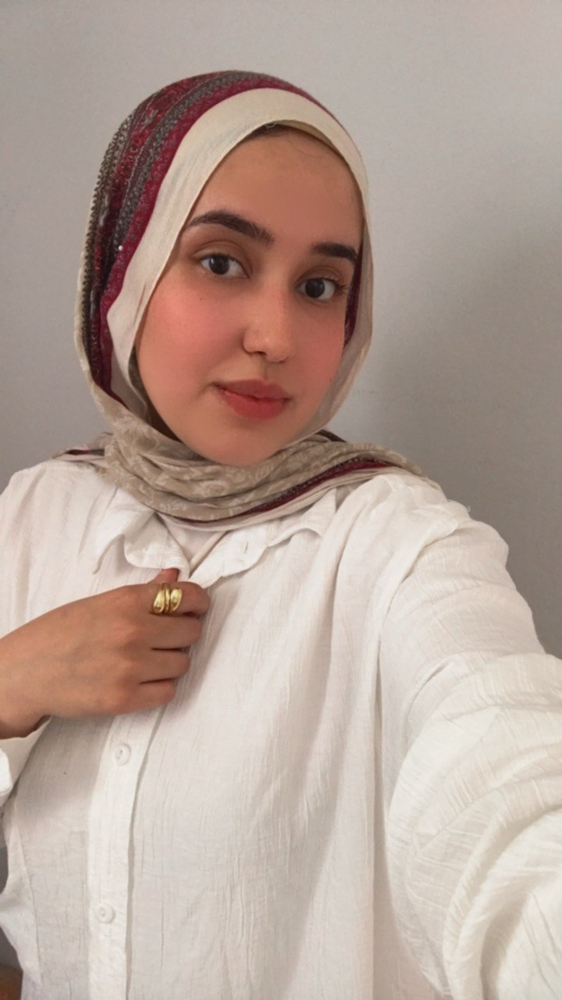

HTML
بناء هيكل صفحات ويب واضح ومنظم.
أتعلم وأطبّقأهلاً، سعيدة بوجودك هنا
أسماء جمال · مطوّرة واجهات أمامية — في بداية رحلتي
أتعلم تطوير الويب وأبني مشاريعي خطوة بخطوة. أستمتع بتحويل ما أتعلمه إلى صفحات واضحة، جميلة وسهلة الاستخدام.

✳أتعلمنبذة بسيطة
// نبذة عني
const profile = {
الاسم: "أسماء جمال",
التخصص: "Front-End",
المهارات: ["HTML", "CSS", "JavaScript"],
الحالة: "أتعلم وأطوّر مشاريعي"
};أنا أسماء، أتعلم تطوير الواجهات الأمامية وأطوّر مهاراتي من خلال التطبيق العملي. بدأت ببناء صفحات باستخدام HTML، وأعمل الآن على تحسينها بـ CSS وإضافة التفاعلات باستخدام JavaScript.
أهتم بأن تكون الصفحة سهلة التصفح، واضحة على الموبايل، ومريحة في الاستخدام. هذا الموقع يجمع رحلتي ومشاريعي التي أضيف إليها كلما تعلمت شيئًا جديدًا.
ما أتعلمه
بناء هيكل صفحات ويب واضح ومنظم.
أتعلم وأطبّقتنسيق الصفحات وتجربة التخطيطات المتجاوبة.
أتعلم وأطبّقإضافة تفاعلات عملية باستخدام DOM.
أتعلم وأطبّقتطبيق عملي
مشاريع أعمل عليها خلال رحلتي في تعلّم تطوير الواجهات.
تطوير صفحة المشروع الأول وإضافة تصميم متجاوب.
↗تدريبات صغيرة على الأحداث وتغيير عناصر الصفحة.
↗تدريب على ترتيب المحتوى وبناء صفحة ويب.
↗خطواتي حتى الآن
بدأت ببناء هيكل صفحات الويب والتعرّف على العناصر الأساسية.
أتدرّب على تنسيق الصفحات وتنظيم المحتوى ليتناسب مع أحجام الشاشات المختلفة.
أضيف التفاعلات وأتدرّب على التعامل مع عناصر الصفحة باستخدام DOM.
كلمات مشجعة
كل مشروع جديد فرصة أتعلم فيها شيئًا مختلفًا وأطوّر طريقة عملي.
أحب أن أرى الفكرة تتحول إلى صفحة حقيقية، وأضيف إليها خطوة جديدة كل مرة.
التجربة والممارسة هما أفضل طريقة لترسيخ ما أتعلمه في تطوير الواجهات.
تواصل معي
عندك فكرة مشروع؟ تعالى نتكلم ونحوّلها لواقع.